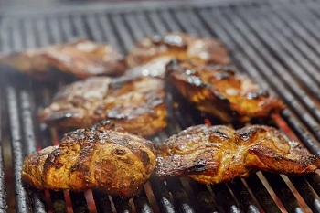

Karkówka z grilla powinna być odpowiednio zamarynowana. Przepis na dobry karczek zawiera m.in. sól, ale też inne przyprawy. Sprawdź, jak przygotować karkówkę na grilla!
W miseczce umieść olej, ocet, ketchup i musztardę. Następnie dodaj 1/2 łyżeczki czarnego pieprzu mielonego, 1 łyżeczkę papryki słodkiej, 1 łyżeczkę papryki ostrej, 1 łyżeczkę mielonego kminku i starty na tarce czosnek. Całość wymieszaj.
Karkówkę opłucz i osusz. Jeśli masz ją w jednym kawałku, podziel na plastry. Nieco rozbij mięso tłuczkiem.
Mięso obtocz w soli.
Karkówkę przełóż do pojemnika i zalej marynatą. Wymieszaj, aby każdy kawałek był w niej obtoczony.
Zamknij pojemnik i schowaj do lodówki. Pozostaw tam na kilka godzin.
Dobrze rozgrzej grill. Mięso często obracaj. Powinno być gotowe w ciągu 10-15 min.